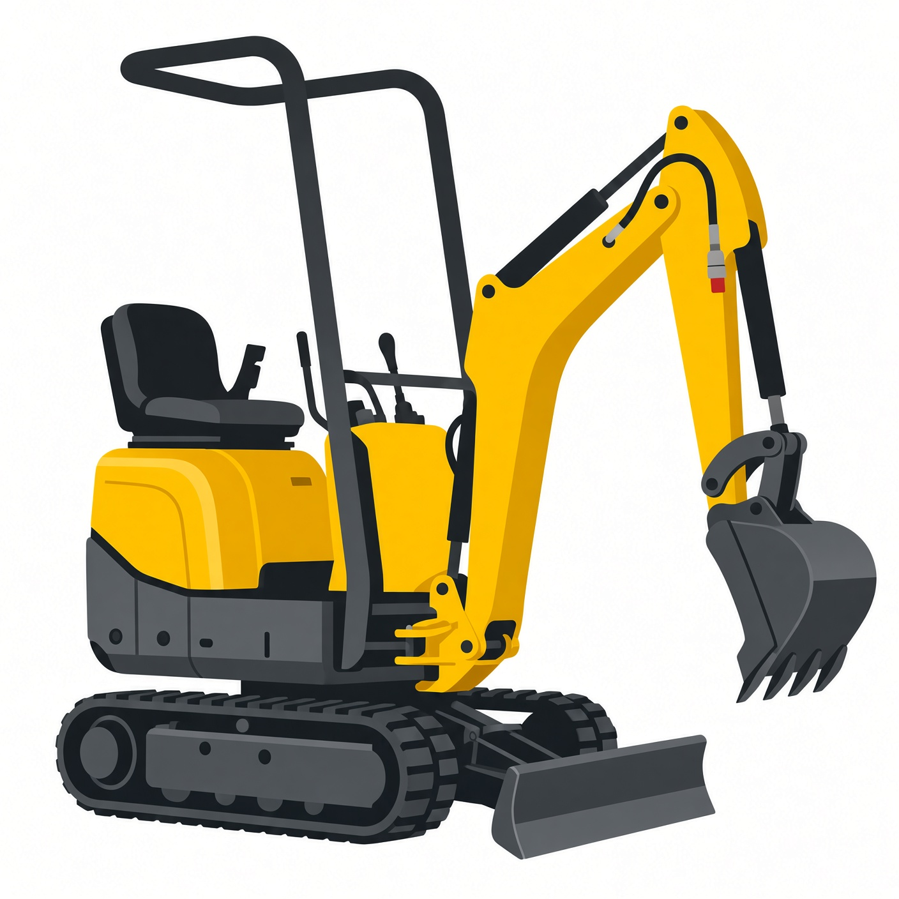
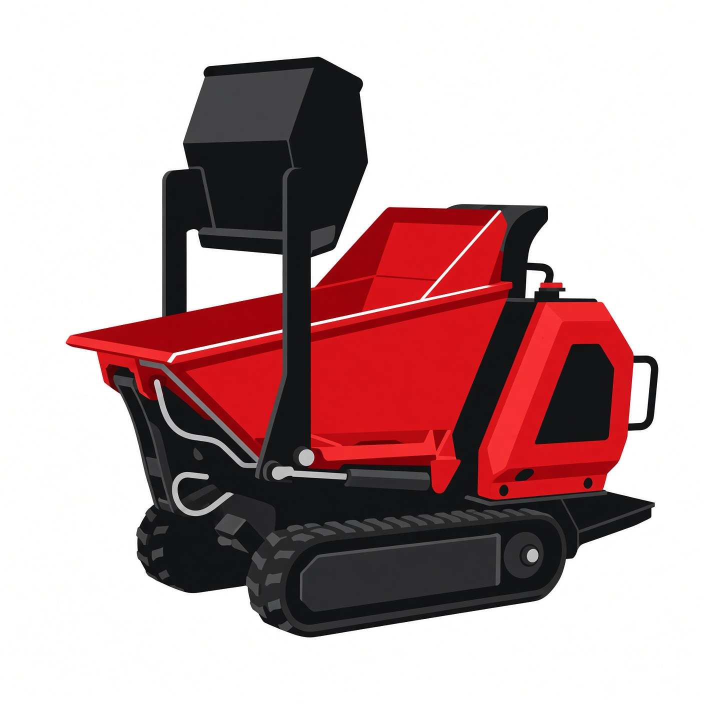

Der Maschinenzwerg
Kleine Maschinen. Große Wirkung. Dein zuverlässiger Verleih für Mini-Bagger, Dumper und Anhänger in Schleswig-Holstein.
Kleine Maschinen. Große Wirkung. Dein zuverlässiger Verleih für Mini-Bagger, Dumper und Anhänger in Schleswig-Holstein.
Kompakt, stark und sofort einsatzbereit – perfekt für Garten, Bau und Erdarbeiten.

Extrem kompakter Mini-Bagger mit Dual-Power-Option (Diesel + Elektro). Ideal für enge Baustellen, Garten und Innenräume.
Details & Miete
Kompakter Raupendumper mit 800 kg Nutzlast. Perfekt für den Transport von Erde und Material auf engem Raum.
Details & Miete
Robuster Zweiachs-Anhänger für den sicheren Transport von Mini-Bagger, Dumper oder Materialien.
Details & MietePersönlich, flexibel und immer gut gewartet.
Kurze Wege in Schleswig-Holstein. Oft noch am selben oder nächsten Tag einsatzbereit.
Alle Maschinen sind regelmäßig gewartet und werden vor jeder Vermietung geprüft.
Kurze Einweisung inklusive. Wir helfen dir, die richtige Maschine für dein Projekt zu finden.
Transparente Preise, flexible Mietzeiten – von einem Tag bis zur Woche und länger.
Ob Garten, Terrasse, Erdarbeiten oder kleine Baustelle – wir haben die passende Maschine.
Unverbindlich anfragen